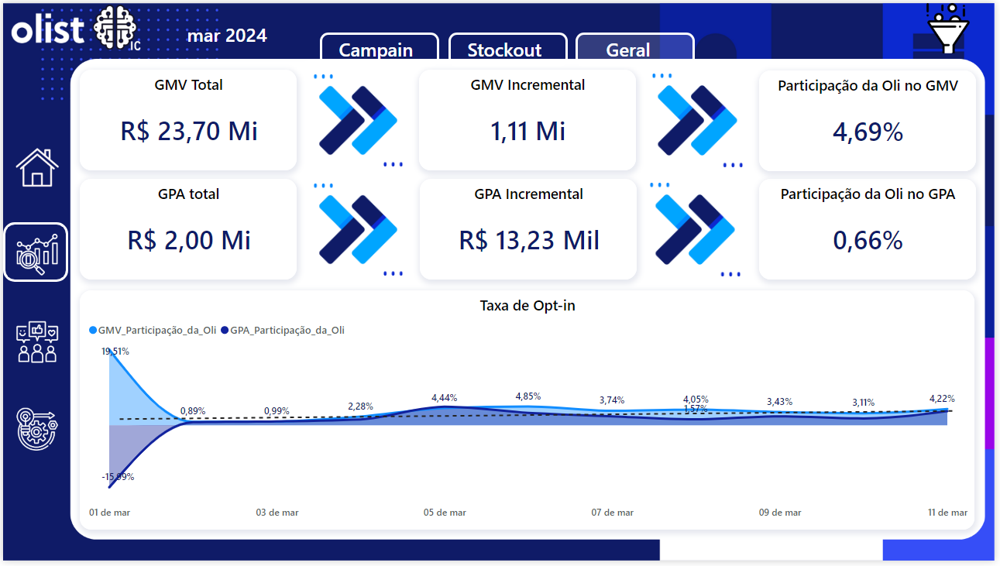
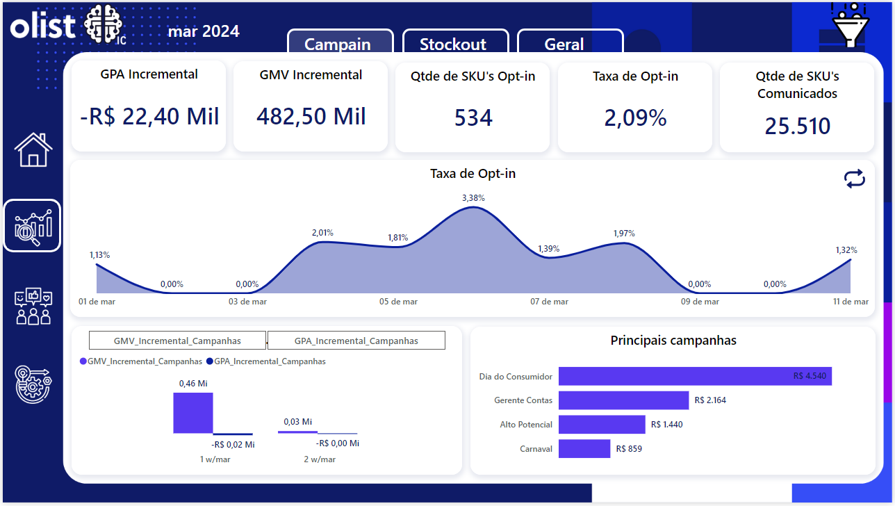
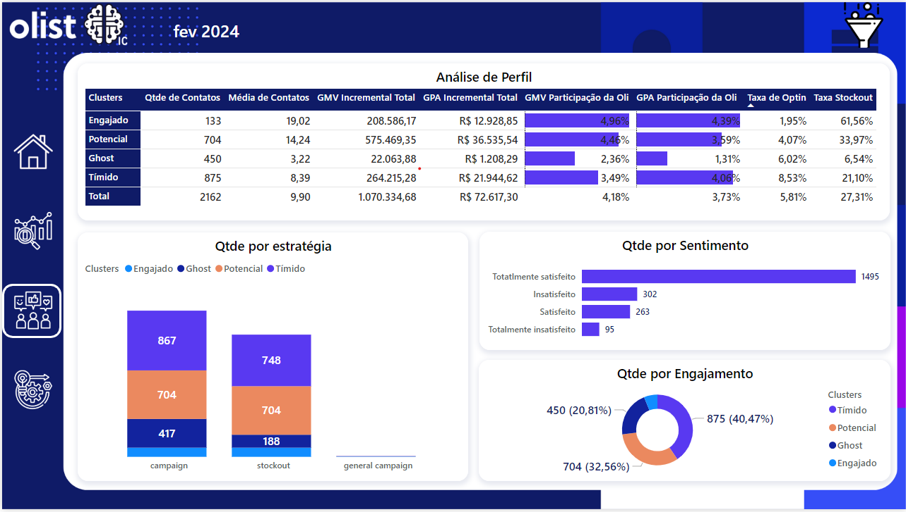
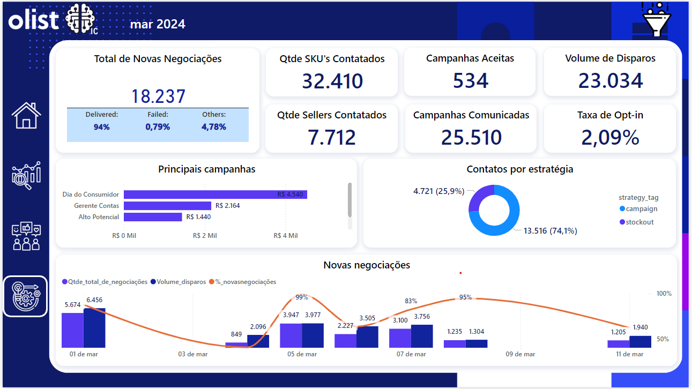
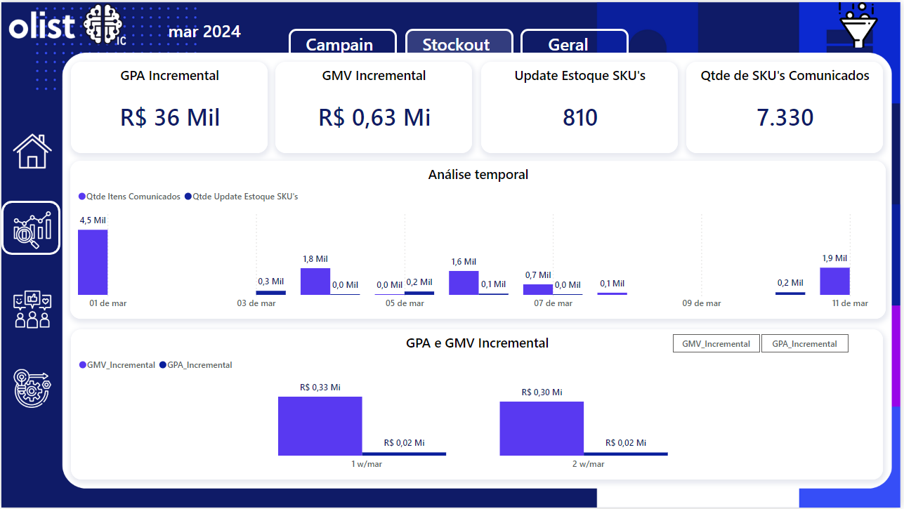

Projetos Power BI
Dashboards e relatórios que criei.

Dashboard Geral — IC
Visão consolidada de GMV, GPA, GMV Incremental e Taxa de Opt-in com análise temporal diária.

Dashboard de Campanhas
Análise de campanhas com GMV/GPA Incremental, Taxa de Opt-in e ranking das principais campanhas.

Análise de Engajamento
Segmentação por clusters (Engajado, Potencial, Ghost, Tímido), sentimento e análise de perfil.

Dashboard Operacional
Painel de operações com volume de disparos, negociações, sellers contatados e contatos por estratégia.

Dashboard de Stockout
Monitoramento de ruptura de estoque com GPA/GMV Incremental, análise temporal e atualização de SKUs.

BLASS — Dashboard Faturamento
Painel de faturamento com positivação de produto/cliente, acompanhamento histórico e análise por estado.
.jpeg)
BLASS — Dashboard Representante
Performance de representantes comerciais com realizado de meta, atingimento e ranking por faturamento.

BLASS — Dashboard Produtos
Análise de produtos com ticket médio, valor cancelado, faturamento por estado e performance detalhada.
.jpeg)
BLASS — Dashboard Clientes
Ranking de clientes com faturamento, positivação, valor cancelado e análise por grupo de produto.

Docile — Matéria Prima
Gestão de matéria prima com cobertura por categoria, demanda vs suprimento e disponibilidade por CD.
.jpeg)
Docile — Manufaturados
Análise de manufaturados com cobertura vs curva ABC, forecast vs faturado e estoque por SKU.